تحكم كامل في شبكتك مع MikroTik Manager Pro
"محاسب ومصمم ومهندس شبكات" متكامل في هاتفك المحمول وجهاز الكمبيوتر.
الحل الذكي الشامل لأصحاب الشبكات والمقاهي ومزودي خدمة الإنترنت: إدارة المستخدمين النشطين، توليد وطباعة كروت الهوتسبوت PDF، أتمتة السكربتات، وتصميم صفحات تسجيل الدخول باحترافية تامة.
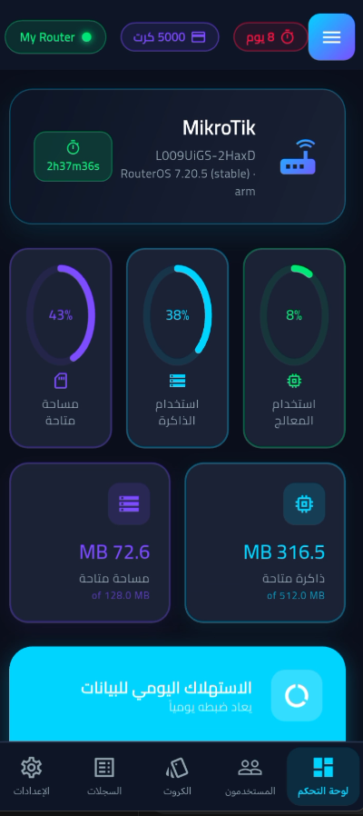
إدارة شبكتك أصبحت أسهل، أسرع، وأكثر أماناً
تم تطوير تطبيق «MikroTik Manager Pro» خصيصاً لحل كافة المشاكل اليومية التي يواجهها أصحاب شبكات الوايفاي ومديرو سيرفرات المايكروتك، من صعوبة التحكم في المستخدمين، تعقيد توليد وطباعة الكروت، وتراكم الكروت المنتهية التي تثقل كاهل الراوتر.
يجمع التطبيق بين قوة أدوات RouterOS API وسهولة الاستخدام عبر واجهة رسومية أنيقة تتيح لك مراقبة الترافيك اللحظي، تصميم وتعديل صفحات الهوتسبوت، توليد كروت المشتركين وتصديرها بصيغة PDF معدة للطباعة فوراً، وحساب الأرباح المالية دون الحاجة لجهاز حاسوب مكتبي أو خبرة في كتابة السكربتات.
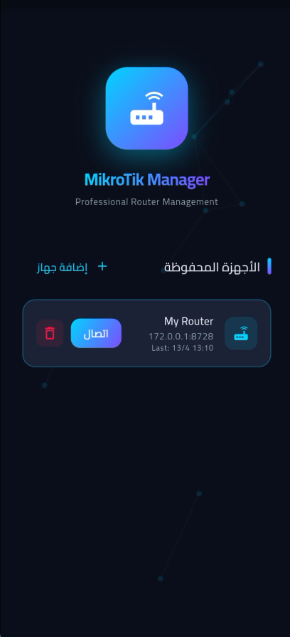
كل ما يحتاجه مدير الشبكة في تطبيق واحد
أدوات احترافية صُممت بعناية لتحويل هاتفك وحاسوبك إلى منصة متكاملة للتحكم في شبكات المايكروتك.
فحص سلامة الموارد والتوليد الذكي
نظام فحص استباقي يراقب أداء المعالج وسقف الترخيص بالراوتر، ليحسب الحد الأقصى والمتبقي الآمن للكروت، لتفادي بطء أو انهيار الراوتر أثناء التوليد الجماعي.
توليد وطباعة الكروت PDF
إنشاء آلاف الكروت العشوائية وتصديرها بصيغة PDF بتنسيقات مقصوصة وجاهزة للطباعة الورقية مع الباركود وقيمة الباقة وسعر الكرت.
إدارة المستخدمين والجلسات
متابعة المستخدمين النشطين (Active Users)، معرفة حجم استهلاك كل جهاز، فصل المتصلين، وتعديل السرعات والبروفايلات بضغطة زر.
الأتمتة والسكربتات الذكية
حذف تلقائي للكروت المنتهية كل 12 ساعة لتفريغ الذاكرة، جدولة المهام، وإعادة الاتصال التلقائي عند انقطاع شبكة الـ Wi-Fi.
إدارة بروفايلات الهوت سبوت
إنشاء وتعديل وحذف بروفايلات المستخدمين، تحديد السرعات (مثل 16M/16M)، التحكم بالمستخدمين المشتركين، وضبط مهلة حفظ عناوين الماك والتحديث التلقائي.
التحكم عن بُعد والـ VPN
إدارة شبكتك من أي مكان في العالم عبر سحابة MikroTik Cloud أو بروتوكولات WireGuard مع توليد أكواد QR لتسهيل التوصيل.
الأمان وقفل البصمة
حماية بيانات الراوتر بقفل التطبيق عبر البصمة أو الرقم السري، مع تشفير محلي كامل لكلمات المرور المحفوظة.
ثنائية اللغة والوضع المظلم
دعم كامل للغتين العربية والإنجليزية مع تصميم واجهات ليلية مريحة للعين وتقليل استهلاك بطارية الهاتف.
تجربة مستخدم استثنائية وسلسة
استكشف أهم واجهات التطبيق وتعرف على إمكانياتها القوية في إدارة وتطوير شبكتك.
الشاشة الرئيسية ومراقبة الشبكة اللحظية
واجهة قيادية عصرية تمنحك فحصاً شاملاً لحالة الراوتر، الذاكرة، المعالج، استهلاك البيانات، وحركة الترافيك في الوقت الفعلي.
تصفح جميع أقسام التطبيق
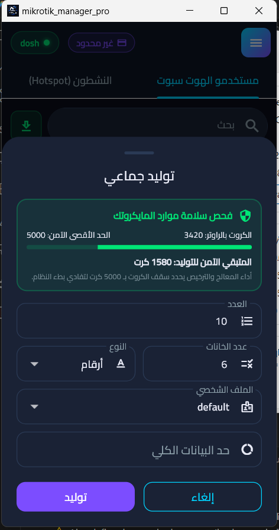
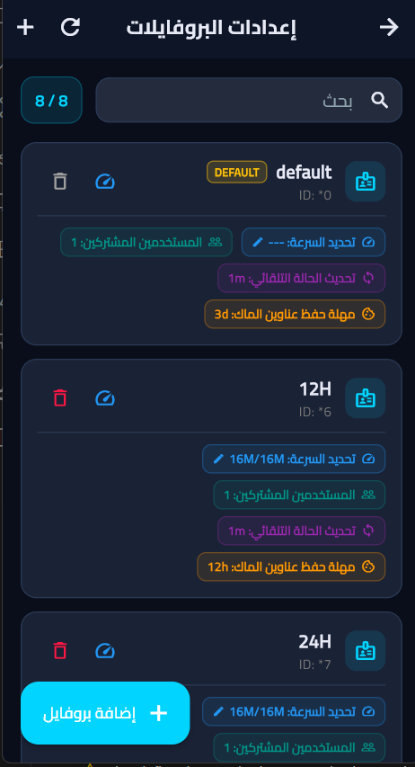
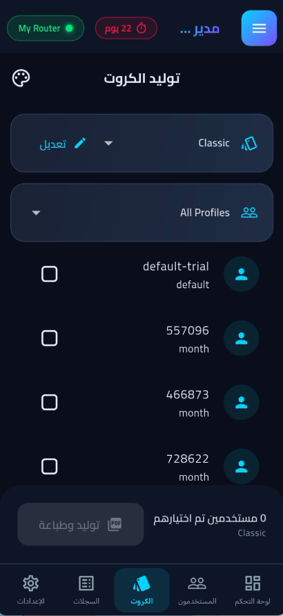
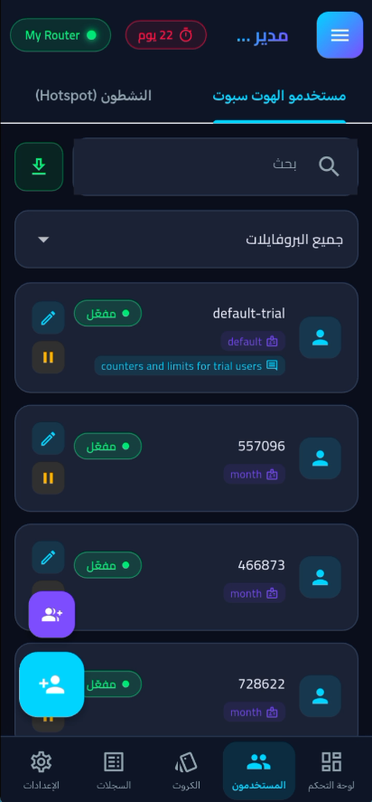
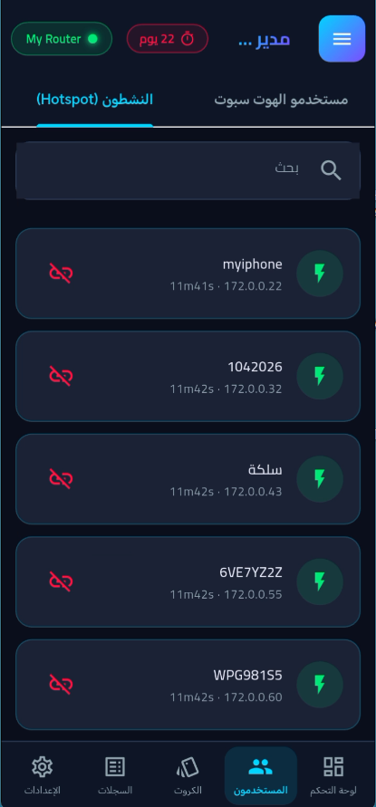
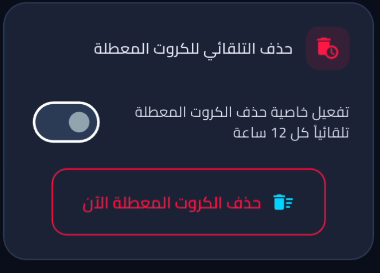
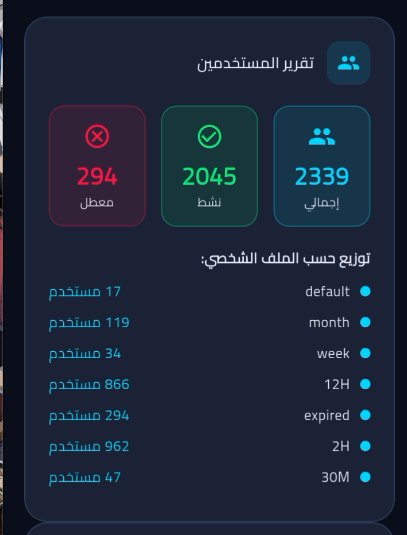
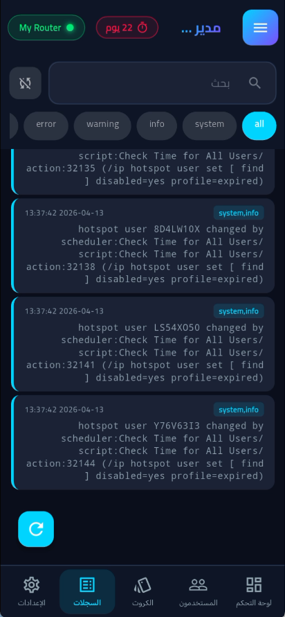
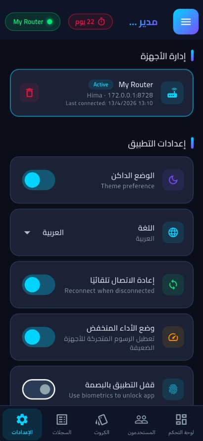
تقنيات حديثة مصممة لأقصى أداء واستقرار
بنية برمجية فائقة السرعة تتواصل مع أنظمة RouterOS بكفاءة واستهلاك ضئيل لموارد الراوتر والهاتف.
Flutter SDK
تطبيق متعدد المنصات عالي السرعة يضمن أداءً سلساً واستجابة فورية.
Windows C++
نسخة سطح مكتب أصيلة مبنية لتناسب بيئة العمل الإدارية في المحلات والمقاهي.
Android Native
توافق تام مع مختلف أجهزة وإصدارات أندرويد مع استهلاك اقتصادي للبطارية.
RouterOS API
اتصال مباشر ومشفر ببروتوكولات مايكروتك الرسمية لضمان أمان العمليات.
PDF Vector Engine
محرك توليد مستندات PDF دقيق يطبع آلاف الكروت بأعلى جودة للقص والطباعة.
لماذا تختار MikroTik Manager Pro؟
الفارق الحقيقي بين الطرق التقليدية المتعبة والأتمتة الذكية لشبكتك.
لأصحاب الشبكات ومديري المقاهي
لمشتركي وزوار الشبكة
الأسئلة الشائعة
كل ما تود معرفته حول متطلبات التشغيل، الأمان، وإمكانيات MikroTik Manager Pro.
تحتاج إلى استشارة أو دعم فني لشبكتك؟
فريقنا جاهز لمساعدتك في إعداد السيرفرات، ربط أجهزة المايكروتك، وتخصيص قوالب الكروت.